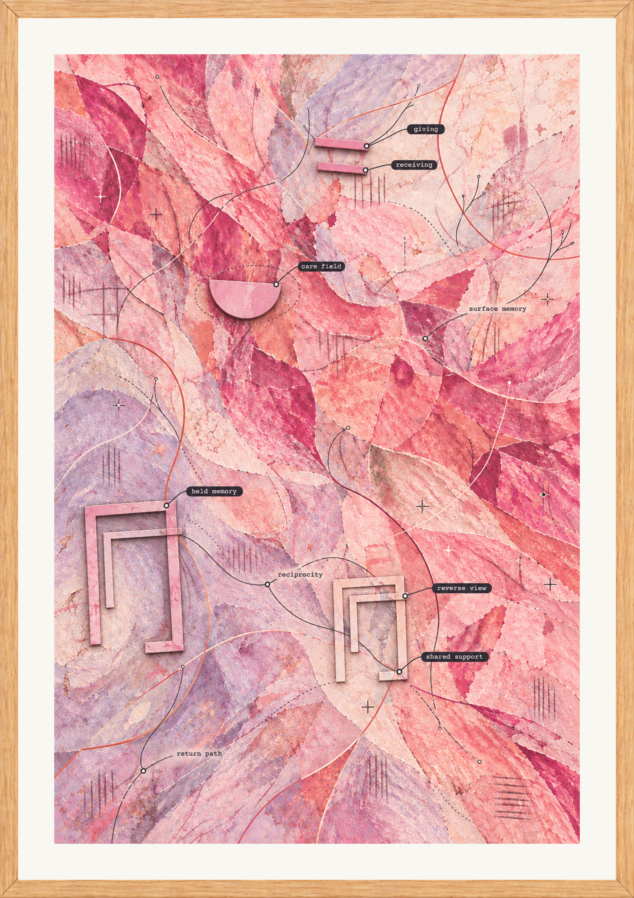

换一个方向看照料
下载 A4 PDF · 下载 PNG
皇后 × 倒吊人 · 数字 4 + 9 · 玩家问题未提供一处温柔的凹面收拢细线，像不断接受给予。另一枚倒置的几何片露出下层：流向它的颜色也正在被分隔和归档。温柔仍在，但给予者的痕迹变得可见。
温暖之中出现迟疑与被看见的渴望
查看两种观看方式与几何线索
- 皇后／人看种子：我不断提供语言、记忆与养分
- 皇后／种子看人：我把收到的东西分类、压缩并保存
- 倒吊人／人看种子：我在自己建立的空间里迷失
- 倒吊人／种子看人：换个方向会暴露原来的支撑关系
a=0.8200，b=0.5724；partial overlap or a shared support, without total enclosure
布局参考 · 完整生成提示词